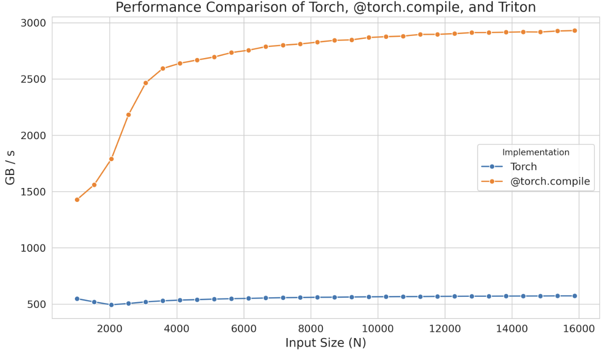
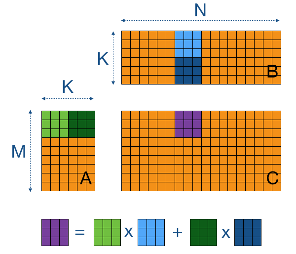
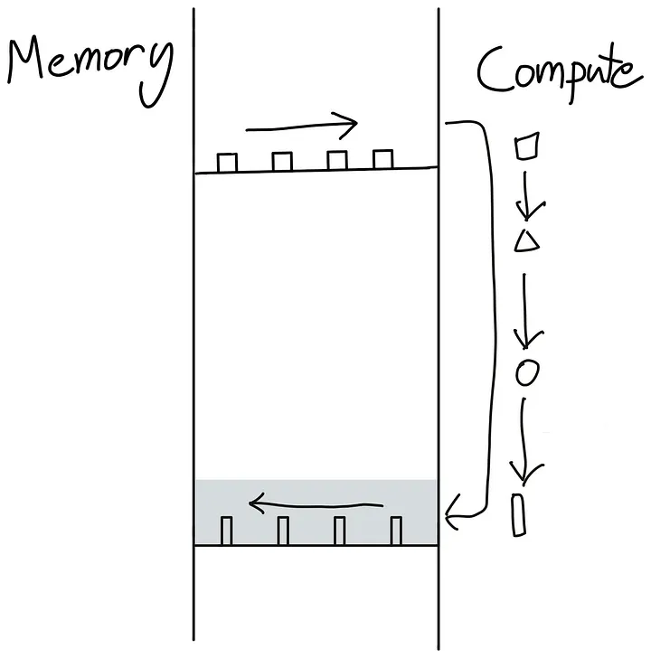
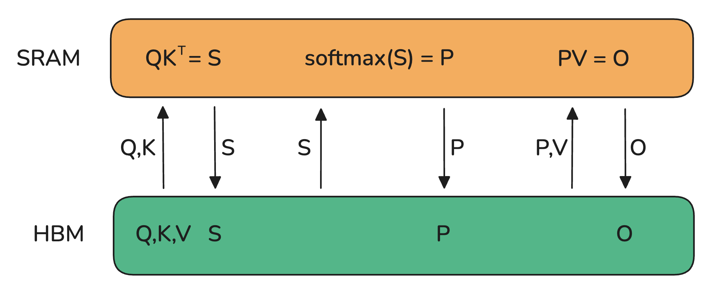
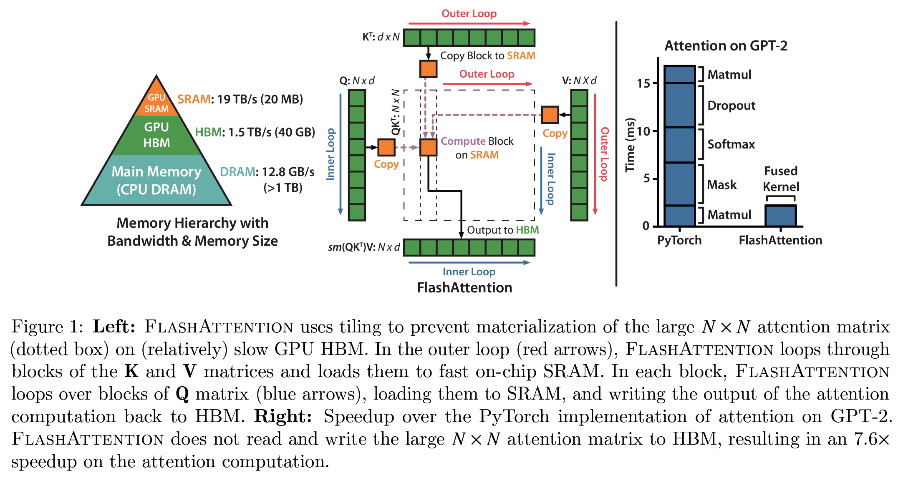
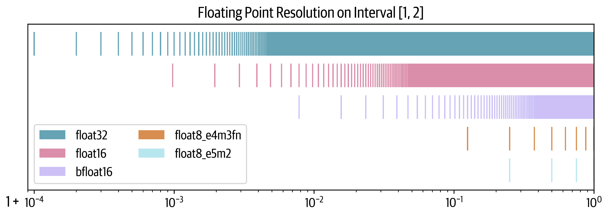

这一路我们从调度与布线的高度看怎么把模型摊上数百乃至上千张GPU：哪儿摆张量并行、哪儿走流水、通信又怎么趁计算的空档悄悄流过。可所有这些讨论都默认了一件事，每一场矩阵乘本身都能按硬件希望的既快又省地跑完。真正的最后一公里，其实藏在每块加速芯片的内部：当一个内核被派到某颗流式处理器上时，线程到底怎么排队、数据怎么从最慢的显存一点点挪进最快的寄存器。这篇就把视线再往低处压一段，直接钻进GPU的存储与算力结构里：先弄清一颗现代加速芯片那些层层嵌套的单元怎么组织，再从PyTorch一路写到CUDA，看为了一点一点把内存访问捋顺，社区攒下了哪些技巧；随后讲清楚把一串算子熔成单个内核之后，如何点亮像FlashAttention这样的工程杰作；最后落到谁都绕不开的数字表示上，把FP16、BF16直到FP8的混合精度训练取舍一次讲透。
和前几篇一致，原文里那些博客配图与剖析工具的截图，若信息量有限、或属于不适合照搬的不完整演示，我们都用文字转述它们实际想要呈现的结论，不伪造任何静态帧；正文配图全部取自原文真实图片文件。公式、关键数据点与那张各家FP8方案的内存对照表尽量原样保留，方便与前几篇、以及后面的收尾篇对照。
在这本书前面的章节里，让模型跑得动靠的是我们在芯片之间搬运算，眼里只有粗略的内存总量与高层的调度；可那些做在单个算子内部的更底层优化，统统被我们跳过了。这里补上一课。GPU的结构高度分层：算力一侧，它由一整排称作流式多处理器SM的计算单元组成，每个SM又管着一组流处理器，也就是常说的核。以一张H100为例，它有132个SM、每SM 128核，拢共16896个核，每个核还能同时扛下多条线程。内存一侧同样讲究：寄存器最小、只归当前线程私有；共享内存与L1缓存为同一SM内跑的线程共用；往上还有全体SM共享的L2缓存；最外圈就是显存里那块最大的全局内存，也就是H100宣传单上写着80 GB的那位，只是它同时也是访问最慢的。GPU的本事，正来自顺着这套分层把尽量多的活并行铺满那些核。
在GPU核上执行的一段代码叫内核kernel，可以用CUDA或Triton这类高层语言来写，再被编译成名为PTX的低层汇编供NVIDIA芯片执行。真正跑起来还要一份跑在CPU上的主机代码，负责准备数据分配、把数据与程序送上设备。内核的调度规矩值得记住三层：先把线程以32为一组绑成warp，同一warp内的线程锁步执行同一条指令、只各算各的那份数据；warp再聚成大小更可调的块如256，每块整个交给一个SM；一个SM能同时并跑好几块，但可用的寄存器与共享内存一旦紧张，后到的块就得排队等派。正是这些规模与分配约束，共同决定了怎么用才最贴硬件。多数时候你未必需要钻到这一层，社区现成的内核尽可直接复用，所以下面只为想自己动手的人拉开一扇起步的小窗。
手头想加一个还没有现成内核的新算子，或是嫌某个PyTorch函数太慢，从头写高吞吐的CUDA内核既耗经验又台阶陡。更顺的起点是torch.compile：它动态捕捉你的运算，把那段代码实时化作Triton里更底层的优质内核，你只需在函数头顶加一行torch.compile装饰器。为了讲得具体，我们拿激活函数ELU来做例子，它的定义是输入为负时取e的x次方减一、非负时直接透传x。先用朴素的PyTorch实现一遍，再罩上装饰器，编译版与非编译版的表现差距极大，哪怕只差这一行注解。下面这张对比图里，横轴是参与计算的列数N：编译版本在相当广的规模范围内，把未编译版本远远甩在后面，这正是torch.compile动态优化把代码降成贴近硬件的内核所带来的收益。

要是编译带来的提速仍嫌不够，就该考虑亲手上Triton内核了。起手式很巧：先把torch.compile自动生成的那份Triton代码抄出来当底稿。怎么拿到？把环境变量TORCH_LOGS设成output_code，再跑一趟带装饰器的脚本，控制台就会吐出对应当前算子的Triton内核。以ELU为例，生成的内核大体是这般布局：tl.program_id(0) 给出程序块的全局编号，由块号算出本块要处理的起点，再用tl.arange构造这一段内的元素索引，一根有效掩码掩掉越界的尾块，安全地把数据tl.load进来，套上负值判定与指数函数，最后tl.store写回。生成的代码虽啰嗦，变量名也可读性差，你尽可把它清理重命名、补上注释，或干脆请个助手帮忙润色，审一眼逻辑对得上即可。
拿我们这个小例子说，独立把它拿去用triton.testing.Benchmark一测，这份拆出来的内核在小尺寸下甚至比torch.compile还略胜一筹，不过这多半是「计不计编译耗时」这类口径的产物。记住这条经验：别从零写起，而要从自动生成的内核起步，把精力全部砸在优化它上面，能替你省下大把时间。
再往下走，Triton也并非无所不能。语言层面对共享内存的布局、以及SM内部的调度这类底层细节够不着，你只能在程序块与块之间跨SM的调度上使劲。要拿到最深处的手感，就得直接上手CUDA，那里底层一切尽在掌握。把这条进阶之路排成一行望远镜正合适：PyTorch最容易上手却最慢；torch.compile容易又快，却不够灵活；Triton更难、更快也更活；而CUDA最难写，但只要写对了，它就是最快也最能随心所欲的那一位。下面我们拣几条在CUDA里最常见也最划算的手法讲一讲。
头一条是优化内存访问路径。全局内存在上面的存储谱里排最远、带宽也最低，几乎是绝大多数应用的头号瓶颈，怎么访问它理顺了，收益立竿见影。硬件一侧，全局内存由DRAM实现，而DRAM有个天生的脾气：你去读某一块地址，它不单给那一格，而是把那一格连同它后面连续的一串单元用片内多路传感并行读出，再整体以突发方式一次交给处理器。内存合并正是吃透了这一层：设法让同一个warp内那32条线程去访问彼此紧挨的内存位置。比如线程0读地址M、线程1读M加一、线程2读M加二……硬件就能把这束请求合并成一次大的高效DRAM突发访问，而不是一趟趟各自单独去取。
用矩阵乘示范最清楚。最简单直白的实现是让每根线程算输出矩阵里的单个元素：先求该元素所在的行列坐标，再对着A的整行与B的整列做一次内积。把它丢给ncu这类剖析器，立刻会看到两项毛病：内存吞吐偏低，且存在明显的未合并访问。原因在于，同一块里坐标差一格的 (0,0) 与 (1,0) 两根线程（它们处在同一个warp）会在同一轮迭代里都去读B的这一整列、却各读A的不同一行。矩阵按行主序存放，也就是一行内的元素在内存里紧紧相连，于是线程 (0,0) 读A的第零行零列、线程 (1,0) 却读A的第一行零列，两个地址隔着老远，而且每一轮迭代坏的位置都复现，内存访问自然无从合并。
改法是把坐标的算法重排一遍：放弃二维块，改回一维块，再重新定义每根线程负责的行与列。让同warp里threadIdx.x相邻的那一束线程共享同一行、各自错开不同的列，于是它们读的是A的同一行、B的不同列，正好踩上行主序的连续布局，内存访问随之合并。再拿ncu一测：未合并访问的告警消失了，GPU的内存吞吐抬升了约十倍，内核的执行时间也一路降到原先的十分之一上下。几行坐标写法的魔力，可见一斑。
第二招叫切片或平铺tiling，核心是用好那块小而快的块内共享内存。矩阵乘里，块内每根线程都要碰A与B两个矩阵的数据，若各线程都独立从全局内存取，同一块的线程往往会在大量重叠的片段上重复读取，冗余惊人。tiling换个做法：每次迭代让块内所有线程合作，把A的一块与B的一块一次搬进共享内存，随后整块线程就在这份共享数据上反复做运算；中间结果落进累加缓冲，算完当前片再推进，直到把A与B各自所有的块都轮完。顺带把线程编号里连续的几位用作数据列号，还能让同warp的访存天然满足行主序，把「合并」一并保住。下面示意图把这个节奏画得很直观：每个循环先合作把一块A、一块B塞进共享内存，做完片内部分乘加再前进。照这个模板实施下来，内存吞吐升到每秒约410 GB，内核耗时又缩了近43%，总吞吐摸到约每秒6.6万亿次浮点运算（6.6 TFLOPs）。

第三招叫线程粗化thread coarsening。靠tiling把共享内存命中率做上去后，若再细细去数内核每一步各线程在各种状态下的停滞周期数，仍会看到一片醒目的MIO队列停滞：那串专门伺候共享内存访问、特殊数学指令与动态分支的指令队列被堵得满满当当。官方剖析文档把这一停滞模式读作排队的指令队列没有空位，而共享内存访问正是首要嫌犯时，最直接的药方是改用更少、却更宽的访存请求：具体说就是把好几根各管一个输出格的线程并成一根更粗的线程，让它一口气负责成排的输出元素，共享内存的访问次数随之成倍下降，管道压力自然缓解。
动手改写或打磨自写内核时，还有最后一条不可忘的大原则：把控制流发散压到最低。一颗SM按单指令多数据SIMD的方式工作，同一瞬间只取一条指令、让整个warp同步执行；不同线程只是作用于数据的不同切片。发散则发生在warp里不同的线程走了不同的执行路径时，例如一个if分支把一批线程引去另一段代码，硬件只得把这些路径串行跑，另一批线程干等着，算力白白浪费。所以内核设计要尽量让同warp内的线程总走同一条路径：少设会造成分歧的分支、多用能保证同路径的数据排布，实在不行还可以上预判（predication）一类的写法。这个原则加上前面几招，基本就是高效内核手艺的入门三件套加一条总的纪律。
前面我们反复提过GPU与CPU的运作可以异步：主机代码能不等结果、用非阻塞的方式把一桩桩活源源不断派给GPU。异步的妙处在于把通信和计算叠到一起，而它还能往更普遍处再推一步，也就是尽量别让数据与执行在主机和GPU内核之间来回报到。一串内核若每一步都把中间结果送回全局内存、再由下一个内核读回，其实大半是无谓的往返；不如让GPU尽量自治：把一串相邻的、各自独立的逐点运算一口气打包进同一个内核一次跑完，这就是融合内核。它对逐点类运算尤其顺手，因为这些运算对每个输入token都独立，压根没有把刚算好的值放回全局内存、再搬进SM再开一炉的必要，把中间值都留在手边、等这一串都算完再用，才是对的。Transformer里能塞这种融合的缝到处都是，最典型的就是LayerNorm一整串规整化与缩放。下面的图用三角形做个简化比喻：左侧是每个算子都先把结果送回全局内存再让下一个内核读回的笨办法，右侧则是把这一串相连运算熔成一次执行、一个不落。理解了这套思路，才算是攒够了去鉴赏内核工程那尊杰作的底气，下一节的主角也就该登场了。

FlashAttention由Tri Dao团队提出，用一套定制的CUDA内核把注意力算得又快又省内存，核心思路是把GPU那多层次存储物尽其用，别去过分依赖最慢的那一层全局内存。先提醒一句，这片全局内存有个颇为反直觉的官方名号叫高带宽内存HBM，名字虽响亮，带宽比起SM上高速的静态随机存取内存SRAM仍差得很远，可朴素注意力恰恰把大块数据往那儿写。一个基础的注意力实现免不了让打分矩阵S与乘上V之后的中间结果、乃至归一化矩阵P整张落到HBM里，用的时候再读回S片，来回路上的带宽瓶颈沉重。而S、P在长上下文下又是模型里数一数二的大激活，光是「把它们实体化」这一件事，就够把注意力拖垮。这片区域的两张内存流动示意，一张画朴素版本、一张画FlashAttention版本，耐心读完就一目了然。

FlashAttention的做法是反过来：它把S切成一小块一小块，正好塞进SM那块小得多的SRAM里；更妙的是它连这整张大S都不必落盘，只保留算softmax归一化所必需的那几个统计量，从而让部分输出O能在SRAM内一步就地算完，不用在中途来回搬中间结果。这样既借上了共享内存，又顺手解开了「把注意力矩阵这么大一块激活整张实体化」的内存瓶颈。凭着这两点，FlashAttention几乎成了如今所有Transformer默认的注意力实现：它免去了实体化S的内存包袱，也把朴素注意力的平方级代价里很是可观的一部分清出主战场。正因如此，当年紧随Transformer出现的各种线性注意力、类亚二次方近似注意力的路子，几乎全被这款又准又快的实现挤到了一旁。

继FlashAttention 1之后，同一个实验室又接连放出第二、第三版。相比第一版，后面这两版的进步已不在注意力机制本体，而在于更贴着GPU的低层实现使劲：一是尽可能把非矩阵乘的杂活压到最低，二是为第二版专门把工作负载仔细摊给各warp与线程块，并为第三版针对最新Hopper也就是H100架构做优化，让它对FP8与张量核心调度得恰到好处。要说代价，FlashAttention对能被加速的注意力模式有所挑剔，不是每种模版都受用。若你要又快、又想要这份灵活，可以改看FlexAttention那套既快又可定制的变体。无论如何，FlashAttention都是「读懂芯片内部存储与算力的排布能带来什么样的跃迁」这一命题的最佳注脚。
再补一句，下面两张配图一张画朴素注意力那套笨办法让S、P在HBM与片上来回，一张画FlashAttention把关键统计量留在片内、只在SRAM分块算输出，是理解全文最重要的一对对照。
前面几乎每一页都念过低位数格式对存激活、参数与优化器状态的内存压力，现在该把格式的细节翻开来摊平，把它们的取舍、优势与局限一次说清。所谓混合精度训练，说白了是训练时混用好几档精度。PyTorch张量默认用单精度浮点也叫FP32：每个数占32位、4字节，这32位又切成三段，符号位用一位定正负，尾数决定一个数有几位有效数字，指数把握它的数量级，跟科学计数法是一回事。既然位数的总量可变，麻烦便只在从哪儿省：是省下尾数的细分，还是牺牲指数的范围。
把常用格式摆到同一条线上对照，一目了然：FP32占32位，符号1、指数8、尾数23；FP16占16位，符号1、指数5、尾数10；BF16同为16位，符号1、指数8、却只给尾数留7位，它名字里的b来自Google的Brain，取的是brain的首字母。到8位又依留位方式分成两种：e4m3，指数4尾数3，与e5m2，指数5尾数2，让人能按需挑更贴手的那款。以能表示的数值范围说，FP32大致横跨约80个数量级；FP16为了多留尾数而牺牲了一大截范围；BF16保住了与FP32相同的指数、把整个数量级都搬了下来，代价是尾数更稀疏；两只8位格式范围更窄，其中e5m2保得住FP16的量级，e4m3则还要再矮一档。要是有图把它们各自「能压多少数量级」铺开，能一眼看出谁宽谁窄。
为什么有的保得住范围、有的保不住？看分辨率便知分晓：在1到2之间等距抽出上万个数，逐一舍入到最近的可表示数上，越稀的格式越会「跳格」。BF16正是靠牺牲这一层精度，才换回与FP32同宽的范围，FP16则与之相反：区间里点的个数决定了格式的分辨率，到8位那两位更冷清，这块1到2的区间里e4m3只落得下7个可表点、e5m2只剩3个。测这种分辨率常用的一把尺叫epsilon，指1.00往后第一根邻居刻度离它多远：以1的上界看，FP32的邻居约落在10的负7次方量级上，FP16大概是千分之一出头，BF16又要再粗近十倍。下图把这个微妙差别画得刻骨：同一段1到2的尺子上，各格式能精确停住的点一个比一个稀，点越稀、相邻数量级间「踏步」的误差越重。

那么混合精度到底怎么个「混」法？答案是我们没法把FP32全撤掉，总要在某些部分保留满精度：这正是它被叫做「混合」的原因。下面的篇幅先看16位，再判断能否一路下探到8位。
把模型里所有张量与运算一股脑切成FP16，结果多半是直接发散。当初系统提出混合精度训练的那篇论文为此备足三道秘方，好让低精度在训练上追平FP32。第一道是保留一份FP32的权重：训练里会有权重变得极小、一旦舍入就归零；可即便权重本身没贴着零，只要更新步的量级远小于权重本尊，两者相加时的低位也会先一步被抹光；一个权重归了零，后面再无梯度信号穿过它，于是它一整局都只能是零了。第二道是loss scaling：梯度天生的个头普遍不足1，是下溢（underflow）的重灾户，一条简单却管用的路子是在反向传播前先把损失值整体放大一批，反向结束后再把手里的梯度缩回去；因为缩放在后续裁剪或优化步之前就已经完成，放大并不干扰学习。第三道是累加：在16位下做求和、平均这类要靠长大的算术，中间累加也易溢出或下溢，于是把中间结果先在FP32里攒着，直到把最终结果降回16位。有了这三招，既能稳住训练，又能白赚低精度算术那种更快的吞吐。
读到这里，你怕是又托着下巴想问一句：能不能比16位再低、再快，一路怼到8位？答案是，既然想赚，办法是有的，只是没那么便宜。
就算把通信与计算的每一丝缝隙全部叠满，总归要撞上硬件那张理论算力的大顶，这时候数字精度就开始主导路径。以H100为例，FP8的矩阵乘理论吞吐是BF16的两倍，这让「把更低精度搬到训练里换吞吐」成了一条格外诱人的路。此前的FP8-LM、torchao、DeepSeek-V3一系列工作都证明了FP8在大规模训练里的可能性，可FP8预训练却横着一个绕不开的硬骨头：稳定性。精度一低，数值的动荡常常把损失曲线拉得分崩离析，想追平高精度训练的准头并不容易；而固定模型规模下学习率抬得越高、这种动荡越猛，FP8预训练因此格外挑食。一张典型的FP8训练发散损失曲线，几乎成了这道坎的标志性出场。
公开报道中第一个做成超大规模FP8混合精度训练的，是DeepSeek-V3。作者们把前向Fprop与反向里那两段，也就是激活回传的Dgrad与权重回传的Wgrad，每一个算子都拆开重审；这和BF16混合精度一个路数：一部分聚合与主权重留在高精度里，真正跑大头的运算才降去FP8。而要从高精度切到范围更窄的低精度，得先把激活值的分布掰整齐，例如取它的绝对最大值当作标度基准。DeepSeek-V3更另起了一套量化方案：范围按一块块分片去归一，输入与激活用1乘128的分片、权重与标度元素用128乘128，好让个别拔尖的离群值不至于把整段标度带跑偏，正如配图里把激活每一个局部与各自权重块分开量化的画法。它手里还有一长串为再省内存与通信而生的后续点子，详见那份技术报告第3.3节。
把各家FP8方案的账本摊到一张表上，数得清每道工序各自改了什么：BF16配FP32的混合基线，GEMM跑在bf16、主权重留FP32、优化器状态两份FP32，合计每个参数要20字节开头；再往下砍掉梯度的FP32累加降到16字节；Transformer Engine干脆连单独的混合格式都不一定留，模型权重放在fp32、优化器两份fp32，同样16字节、省约20%；FP8-LM的O3档把主权重、梯度累加都换成fp16、余下全部fp8，一脚探到每参9字节、省约55%；DeepSeek-V3里GEMM用fp8、主权重留fp32、梯度走bf16，每参15字节、约省25%；而nanotron自己的FP8实现把几乎能动的都压成fp8，只在梯度累加处留fp32，每参压到10字节、约省50%。总的看，几套方案在「哪里保满精度、哪里敢降位」上反复斟酌，也各自换来不同量级的内存回吐。
说到底，在2025年早春这个时点，FP8仍属实验中的手艺，方法还在快步辗转；可既然好处摆在明面上，它多半会慢慢站稳脚跟，接班BF16混合精度成为训练默认。想找一套开源的FP8训练实践，可直接去看nanotron的相关合并请求。再把目光稍稍兜向更远，Blackwell这一代NVIDIA新品已经公开宣布支持FP4训练，提速的期待再上一层，只是几乎可以肯定，它又会插进一轮崭新的训练稳定性难题。
| 方案 | GEMM精度 | 主权重 | 梯度累加 | 模型权重 | 梯度 | 优化器状态 | 每参内存 |
|---|---|---|---|---|---|---|---|
| BF16+FP32混合基线 | bfloat16 | fp32 | fp32 | bf16 | bf16 | fp32+fp32 | 4+4+2+2+4+4 = 20字节 |
| 去掉梯累FP32 | bf16 | fp32 | 无 | bf16 | bf16 | fp32+fp32 | 4+2+2+4+4 = 16字节 |
| Transformer Engine | fp8 | 无 | 无 | fp32 | fp32 | fp32+fp32 | 4+4+4+4 = 16字节，省约20% |
| FP8-LM的O3级 | fp8 | fp16 | fp16 | fp8 | fp8 | fp8+fp16 | 2+2+1+1+1+2 = 9字节，省约55% |
| DeepSeek-V3 | fp8 | fp32 | fp32 | fp8 | bf16 | bf16+bf16 | 4+4+1+2+2+2 = 15字节，省约25% |
| nanotron的FP8 | fp8 | bf16 | fp32 | fp8 | fp8 | fp8+fp8 | 2+4+1+1+1+1 = 10字节，省约50% |
参考：https://huggingface.co/spaces/nanotron/ultrascale-playbook